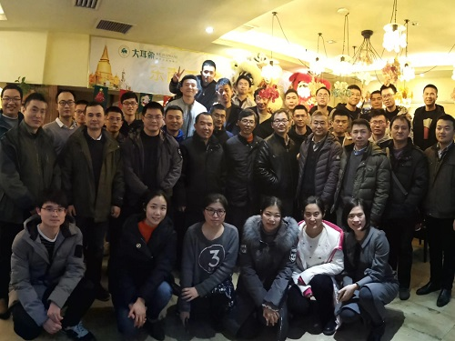
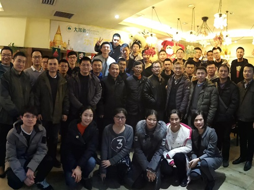

熊伟
副教授，国防科技大学
研究方向为空间数据库和地理信息系统，以及人工智能技术在时空大数据中的应用。
主讲课程包括：《数据库系统原理》、《信息系统原理与应用》、《高级数据管理》等。
中国湖南长沙德雅路109号, 410073
(+86-0731)87003232
xiongwei(at)nudt.edu.cn
研究方向为空间数据库和地理信息系统，以及人工智能技术在时空大数据中的应用。
主讲课程包括：《数据库系统原理》、《信息系统原理与应用》、《高级数据管理》等。
中国湖南长沙德雅路109号, 410073
(+86-0731)87003232
xiongwei(at)nudt.edu.cn
 


Geo-Gap Tree: A Progressive Query and Visualization Method for Massive Spatial Data. [pdf]
Wei Xiong, Ruiqing Li, Jin Peng, Ye Wu, Ning Guo, Ning Jing
IEEE Access, 2019, 7: pp. 99428-99440, DOI: 10.1109/ACCESS.2019.2929531.
HiGIS: An Open Framework for High Performance Geographic Information System. [pdf]
Wei Xiong, Luo Chen
Advances in Electrical and Computer Engineering, 15:(3): pp. 123-132, DOI: 10.4316/AECE.2015.03018.
Parallel Geospatial Raster Data I/O Using File View [pdf]
Wei Xiong, Ye Wu, Luo Chen, Ning Jing
IEICE Transactions on Information and Systems, E98D:(12): pp. 2192-2195, DOI: 10.1587/transinf.2015PAL0001.
A Real-time System for Air Quality Monitoring Based on Main-memory Database. [pdf]
Zhuo Tang, Wei Xiong, Luo Chen, Ning Jing
14-20 Aug. 2016, 24th International Conference on Geoinformatics, Galway, Ireland. DOI: 10.1109/GEOINFORMATICS.2016.7578961
An Open GIS Framework.(Chinese) [slides]
Wei Xiong
Technical Report. NUDT Changsha, 2013.
My study is supported by Supported by the National High Technology Research and Development Program of China and the National Natural Science Foundation of China.
updated on 13 Mar. 2020.
These are resources of this course.
These are resources of this course.